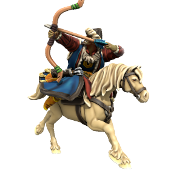

Military
All Atkani are expected to be proficient in both horseriding and archery, a tradition called the "Way Of The Open Sky", meaning any given civillian can serve as a Keshik, a mounted horse archer warrior. When united, the Atkani Horde is near unstoppable, but the nomadic lifestyle of the Atkani people places a logistical restraint on sustained campaigns. The Horde prefer instead to hit hard and fast, decimating the enemy and exacting tribute before returning to their homelands.
Keshik
Mounted archers, the key unit of the Ordo'Atkan horde. The shortbow sacrifices range for accuracy and speed, these units hit fast and hard, deadly at mid range.
